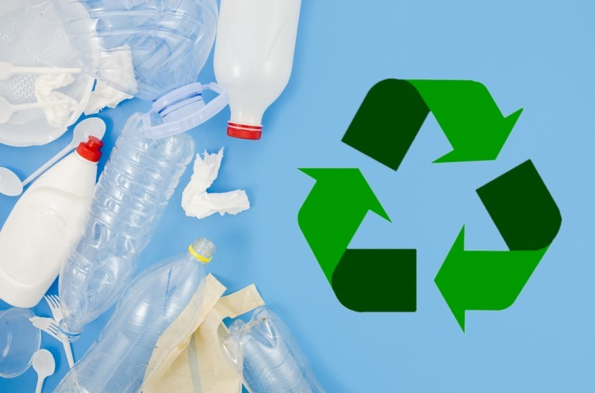
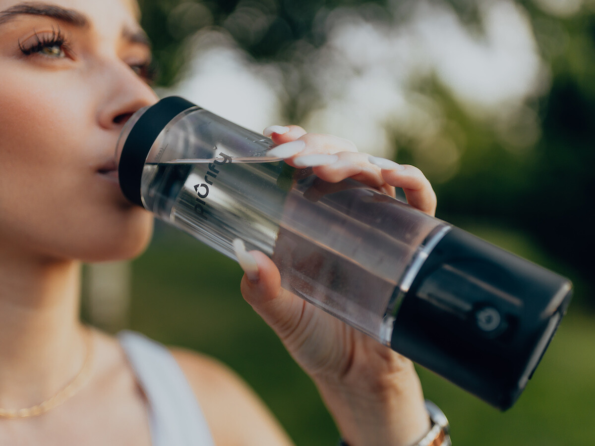
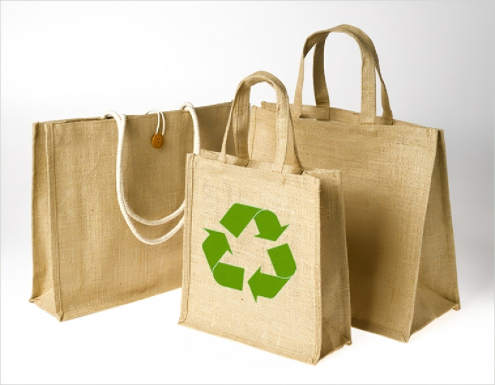
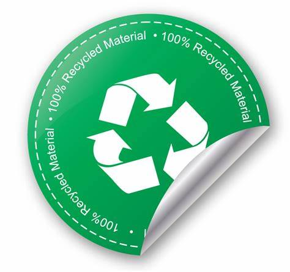

Aqui vai algumas dicas de práticas que podemos aplicar no nosso cotidiano.

Praticar a reciclagem corretamente: Auxilia na redução do impacto do excesso de plástico no meio ambiente descartado de maneira incorretamente, deve-se separar e descartar os resíduos em seus locais apropriados.

Cozinhe Mais: Praticar o hábito de cozinhar em casa, reduz o uso de embalagens de plástico usadas por comércios e ajuda a criar hábitos alimentares mais saudáveis e consequentemente melhora na saúde física e redução do uso do plástico.

Carregue sua garrafa pessoal por onde for: Opte por garrafa de material reutilizável de qualidade, para que não haja necessidade de aumentar o consumo de compra de garrafas de plástico vendidas em comércios locais, diminuindo consequentemente a poluição do plástico no planeta.

Utilize sacolas reutilizáveis: Quando realizar as compras, optar por levar sacolas reutilizáveis contribuindo assim para o meio ambiente.
